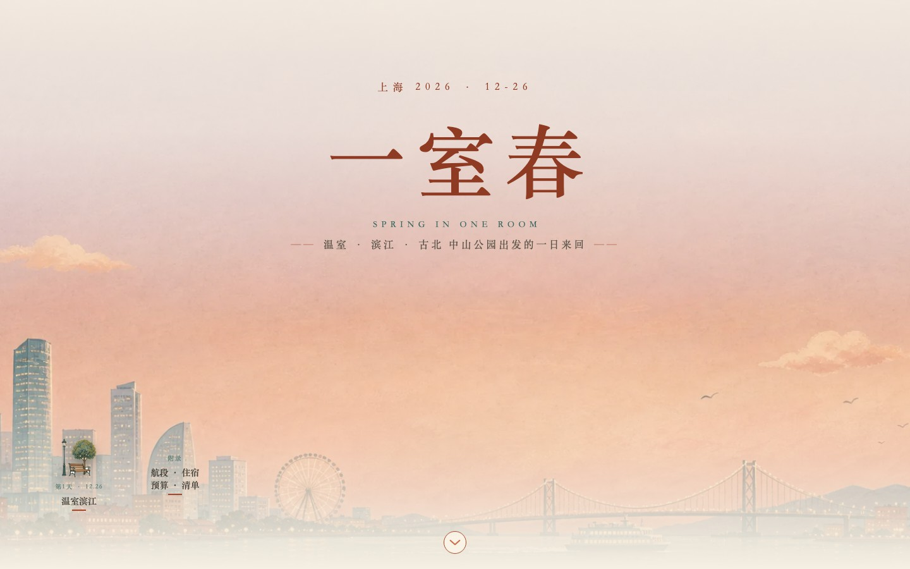

专题 · 把一次出门安排明白 · 第 3 讲 · 共同
做成网页，留住三样东西
选一种页面风格生成行程网页，检查后保存网页、离线地图和日历提醒，并做三条复盘。
行程核对完，就可以做成网页。网页是给家人看的：出门前在手机上看一眼，知道几点出门、下一段怎么走。做好后还要把日期和地点相关的三样文件留住，别只留一张截图。
1. 挑一种页面风格
插件提供几种页面风格，比如插画、手账、闪屏。它们的区别只在版式和配色，行程内容不变。案例选了插画风格，因为字大、一天的分段清楚，在手机上发给家人也好读。
一次只做一种。做完打开看过，觉得不合适再换，不要一次做成好几版。
2. 生成并检查
提示词
请把这份行程做成网页，用插画风格，中文。
页面里要有：封面、一天的时间线、每段地图链接、行前清单和雨天备选。
生成后告诉我文件在哪里，并一起给我离线地图（KML）和日历提醒（ICS）。
做好后先自己检查一遍有没有空白、占位文字或打不开的链接，再让我打开看。
打开页面后按这个顺序看：
- 封面：日期、起点、路线能不能一眼读完。
- 一天：每段的时间和交通对不对，点两三个地图链接，看是否落在正确的地点。
- 附录：行前清单、订位记录、预算在不在。
- 手机：用手机宽度再看一遍，字有没有被切掉，按钮能不能点。
页面右上角有〔生成长图〕，可以把整卷行程存成一张图发到家庭群；某一天也能单独存。

3. 存三样东西
| 文件 | 用途 | 怎么用 |
|---|---|---|
网页（.html） |
发给家人，手机浏览器直接打开 | 单独一个文件，不依赖网络；也可以先存成长图 |
离线地图（.kml） |
把当天所有点导入地图 App | 高德、百度或 Organic Maps 导入收藏点，景区信号差时备用 |
日历提醒（.ics） |
预约、订位、出发前复核 | 双击导入日历，提醒会按日期出现 |
案例的三样文件都在这里：
4. 放回仓库或自己的目录
课程里的案例放在 assets/topics/trip-planning/examples/，谁都能打开看。自己的真实行程不一样：里面有出发时间、常去的地方和订位记录，放在本机一个固定文件夹里就好，不推到公开仓库。
要长期保留时，一个日期一个文件夹，把网页、地图、日历和计划文件放在一起。下次改行程只改计划文件，再重新生成网页和地图，别在网页上手改。
5. 三条复盘
做完当天就能写，三句话够了：
- 哪里估错了：案例初稿估 5.4 km，按真实街道算是 6.8 km，所以把黄金城道那 2.2 公里改成了打车。
- 出发前还要再查什么：温室当天有没有临时闭馆、两家餐厅是否营业、地铁有没有调整。
- 下次少问什么：这次已经把「从中山公园站出发、两餐要订位、走路不超过 6 公里」写进条件卡，下次直接复用。
- 生成了一种风格的网页，并打开检查过封面、一天和附录。
- 在手机上又看了一遍，字没有被切掉。
- 网页、KML 和 ICS 三样都保存好了。
- 真实行程放在本机目录，没有推到公开仓库。
- 写下了三条复盘。